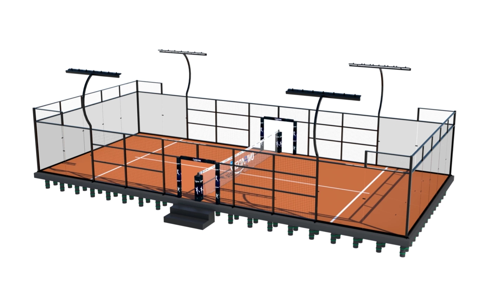

Mobile, portable or relocatable?
These terms describe the same buying intent; SPORTENVO uses Mobile Padel Court as the official series name.
RELOCATABLE COURT SYSTEM
Quick Answer: What is a mobile padel court? It is a commercial court system planned for flexible-site installation and possible future relocation. Buyers may also search for a portable or relocatable padel court. The final project still requires suitable ground, drainage, anchoring, access and local review.

Commercial Project Supply
Send the location and court quantity first. We can review ground condition, modular foundation, anchoring, drainage, installation access and future relocation before the final system is confirmed.
To start, send
Country / CityCourt QuantityIndoor / Outdoor
Get Project Quote Not sure which system? Use Project Configurator →System Overview
Relocatable padel court system for leased sites, temporary venues and projects requiring installation flexibility.
Buyers may also search for this type of system as a portable padel court or relocatable padel court. SPORTENVO keeps the official product name Mobile Padel Court; the final configuration is specified around venue use, local climate, ground conditions, anchoring, access and the confirmed commercial brief. Final structural and foundation requirements remain project-specific.
Commercial Snapshot
A fast procurement view for portable and relocatable projects where future movement is useful but ground, drainage and anchoring still require planning.
| Best fit | Temporary venues, leased sites, events, seasonal projects and commercial locations where future relocation may be required. |
|---|---|
| Reference specs | Relocatable commercial court system planned around a compatible base / support strategy, court structure, glass, mesh, turf and lighting. |
| Site requirements | Suitable bearing surface, level review, drainage, access for delivery / lifting, anchoring strategy and local approval requirements. |
| Supply scope | Mobile court system, compatible supplied components, technical drawings, export packing and installation / relocation guidance as confirmed. |
| Buyer provides | Exact location, court quantity, ground or deck condition, levels, access, intended operating period, relocation plan and any wind / roof requirement. |
| Documents | Project drawings should define the support / anchoring interface and the supplied scope before installation or future relocation. |
| Related guide | Mobile vs Fixed Padel Court → |
Buyer Search Answers
SPORTENVO keeps Mobile Padel Court as the official series name. Commercial buyers should compare the complete court, base or foundation, anchoring, packing, relocation plan and installation-support scope—not only the headline court price.
These terms describe the same buying intent; SPORTENVO uses Mobile Padel Court as the official series name.
Not always. A modular foundation may be suitable, but ground, level, drainage and anchoring still need review.
Yes, when dismantling, transport, component condition and the future receiving site are planned properly.
Country, court quantity, dimensions, surface, access, drainage conditions and expected relocation needs.
Key Considerations
Technical & Procurement Summary
A mobile padel court is planned around relocation and flexible-site use, while still requiring a verified base, drainage, levels, access and anchoring strategy.
| System type | Mobile / portable / relocatable commercial padel court |
|---|---|
| Foundation approach | Can be coordinated with an engineered modular steel foundation for suitable projects; site review remains required |
| Ground requirements | Capacity, level, drainage and finished surface must be checked before installation |
| Anchoring | Confirmed from the selected base system, exposure and local project requirements |
| Relocation planning | Dismantling sequence, component condition, packing, transport and receiving-site suitability must be planned in advance |
| Installation access | Truck / container unloading, lifting access and local installation sequence should be confirmed before shipment |
| Order quantity | Project-specific; confirm in the current quotation after the selected base, court configuration and quantity are reviewed |
| Production planning | Typical production scheduling is confirmed after drawings, specification and commercial terms are approved |
Buyer FAQ
SPORTENVO uses Mobile Padel Court as the official series name. Buyers may also call this type portable or relocatable because the court is planned around a base and installation strategy that can support future dismantling and relocation.
Not always. Suitable projects can use an engineered modular steel foundation, but the site still needs review of ground capacity, levels, drainage, anchoring, access and local requirements.
Relocation can be planned, but the receiving site must still be checked. Dismantling, packing, transport, component condition and reinstallation tolerances all affect the relocation scope.
Suitability depends on the actual ground or structural deck, level tolerance, drainage and load path. A visual photo alone is not enough to approve a site.
The quotation should clearly separate court structure, base / foundation system, turf, glass, lighting, packing, shipping, installation guidance and any local civil or lifting work.
Send project country and city, court quantity, site dimensions, existing surface, ground / drainage condition, access, target opening date and whether future relocation is expected.
Project Fit
Mobile is selected for flexibility and future relocation; the receiving ground, base system, drainage and anchoring still need engineering review.
Relocation Planning
A Mobile Padel Court can reduce dependence on permanent civil works and support future relocation, but the first site, dismantling process, transport and receiving site all need to be planned as one lifecycle.
Confirm bearing capacity, finished levels, drainage, access and anchoring before installation. A modular base does not correct an unsuitable site automatically.
Keep final drawings, component identification, connection details and installation records so a future dismantling team knows how the supplied system was assembled.
Glass, steel, turf, lighting, fasteners and base components require an agreed dismantling sequence and handling method to reduce damage.
Relocation packing is different from simply loading used components. Glass protection, component labeling and transport restraints should be planned before dispatch.
The second location needs its own ground, drainage, access, exposure and local approval review. Approval of the first site does not approve the next one.
Check reused structural parts, connections, glass, turf and base components before reassembly and replace damaged or out-of-tolerance items where required.
| SPORTENVO supply / support | Confirmed Mobile Court and base scope, interface drawings, component information, export packing for initial delivery, and installation / relocation guidance according to the agreed quotation. |
|---|---|
| Buyer / local team | Site preparation, local approvals, unloading / lifting, local labor and equipment, drainage / utilities, and future dismantling / transport / reinstallation work unless specifically included. |
| Modular Foundation relationship | The Modular Foundation Base can support suitable relocatable projects, but Mobile Court and Modular Foundation remain separate project decisions and must be matched to the actual site. |
Portable Project Proof
Use the Harwich reference together with the Mobile vs Fixed guide and foundation information to compare flexible-site planning before requesting a quotation.
Verification & Project Support
Use the quality, engineering and project-reference pages to verify the specification, manufacturing process, documentation and delivery scope before the final order is confirmed.
Commercial Project Path
Use the commercial project page to compare court, foundation, weather protection, supplier scope and project inputs before requesting the final quotation.
Procurement Resources
Use the buyer guides and project references to check the site, scope and commercial assumptions before the final system is confirmed.
Related Systems
Project Review
Already planning a leased, temporary or relocatable venue? Start with the country, court quantity and site condition. Use the RFQ tool when you are ready to compare the court, base, packing and relocation scope line by line.
Mobile Court and Modular Foundation are related decisions, but they are not the same product.